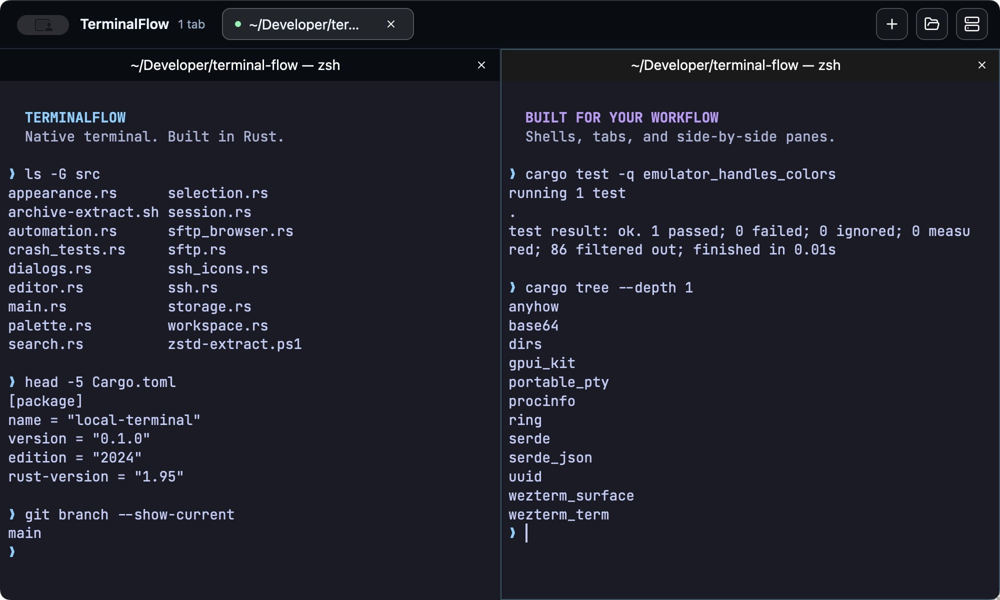
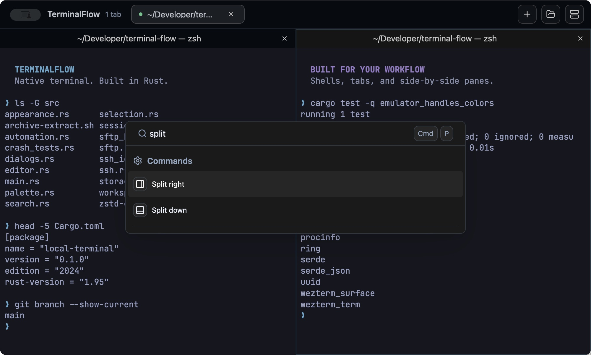

Room for your entire workflow.
Run your dev server, tests, and shell side by side. Split a tab into up to four independent panes, keep projects in separate tabs, and move between them with the keyboard.
MAKE SPACE
Your shells, servers, and files.
One workspace that keeps up.
From your first local command to the next remote deploy. Split panes, SSH, SFTP, and a built-in editor, together in one native desktop app.
macOS Apple Silicon · Linux AMD64 · Windows AMD64

01 / THE WORKSPACE
Keep the tools you reach for every day
right where the work happens.
Run your dev server, tests, and shell side by side. Split a tab into up to four independent panes, keep projects in separate tabs, and move between them with the keyboard.
Connect to saved SSH servers and browse their files with SFTP. Upload, download, and manage remote folders without reaching for a separate file-transfer app.
Open local and remote files in the built-in editor. Syntax highlighting, line-ending preservation, and unsaved-change prompts help you make the change and get back to your terminal.
02 / AT YOUR FINGERTIPS
One command palette for workspace actions, saved commands, and SSH servers. Fuzzy search gets you there without taking your hands off the keyboard.
Make it yours with 12 color schemes, 10 font choices, and live appearance previews.

03 / WHAT'S NEXT PLANNED
We're planning a built-in assistant powered by the Claude API, to help turn a question or an error into a clearer next step.
Share what you'd like to seeDescribe what you want to do in plain language and get a shell command suggestion to review.
Get explanations of selected terminal errors and suggested troubleshooting steps within your workspace.
On the roadmap. The Claude assistant is not available in the current release.
04 / GET STARTED
Choose your platform.
Get back to building.
Apple Silicon · ARM64
Download .zip for macOS Apple Silicon64-bit · AMD64
Download .tar.gz for Linux AMD6464-bit · AMD64
Download .zip for Windows AMD64Prefer to build it yourself? Follow the source installation guide.
A FEW DETAILS
TerminalFlow is a native desktop terminal written in Rust, built with GPUI Kit and WezTerm's terminal emulator. It combines local shells, split panes, SSH connections, SFTP transfers, and a file editor in one workspace.
Download the archive for your operating system and extract it. On macOS, move TerminalFlow.app to Applications. On Windows, launch TerminalFlow.exe. On Linux, run the terminalflow binary; check the release requirements for system libraries and graphics support. The macOS release is ad-hoc signed and is not Apple-notarized.
Yes. TerminalFlow uses your configured shell and supports SSH profiles with password or key authentication. Each pane has its own shell session, and the SFTP browser works alongside your remote terminal.
The Claude assistant is planned and has not been implemented yet. The intended features are shell command suggestions from natural-language requests and explanations of selected terminal errors. Today's release includes the terminal, SSH/SFTP, and editor features described on this page.
Open an issue on GitHub. Include your operating system, the app version, and the steps needed to reproduce the problem.